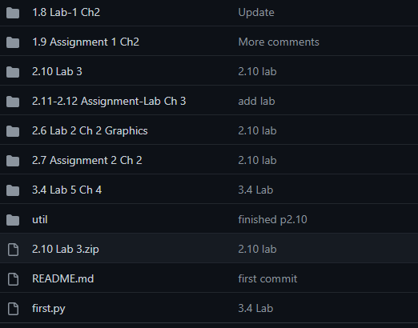
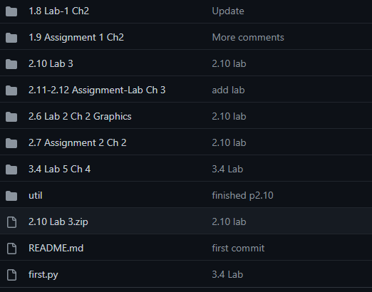

Python Repository
A collection of python programs ranging from graphics usage, classes, objects, and many more -- too many to individually show
You can click the title of project to be taken to the repo
A collection of python programs ranging from graphics usage, classes, objects, and many more -- too many to individually show
I plan on utilizing python and my other languages during my internship at Argonne in order to build experience automating things. I also plan on completing more courses/finding internships in order to grow my knowledge in the field.